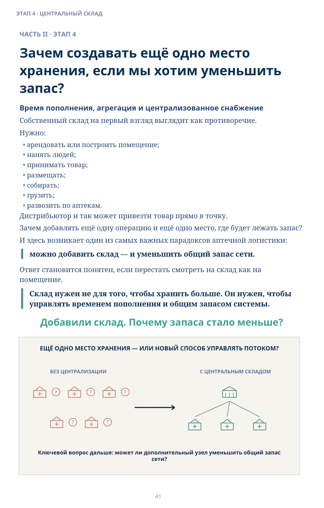
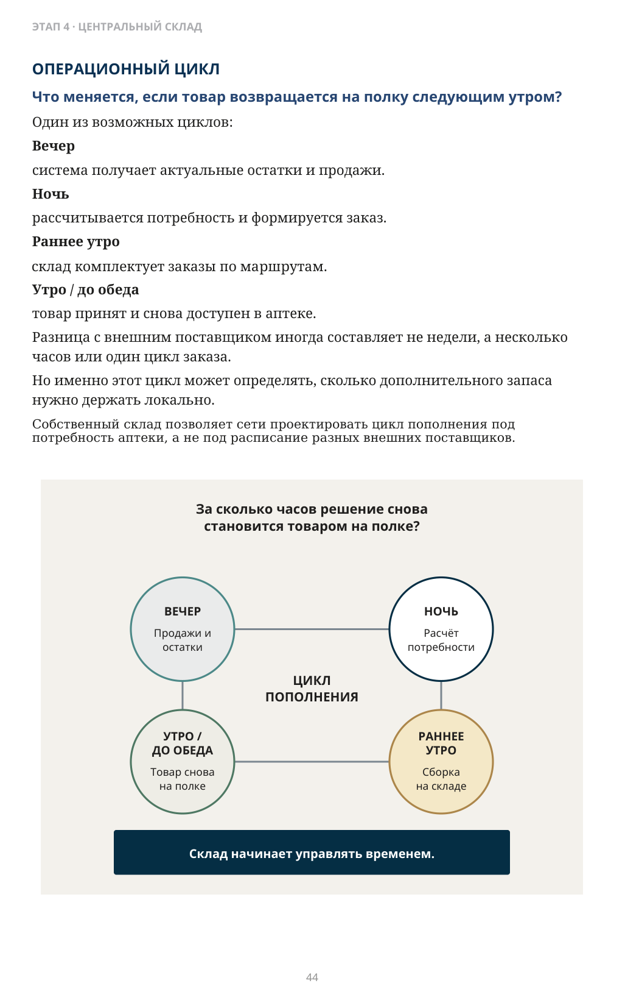
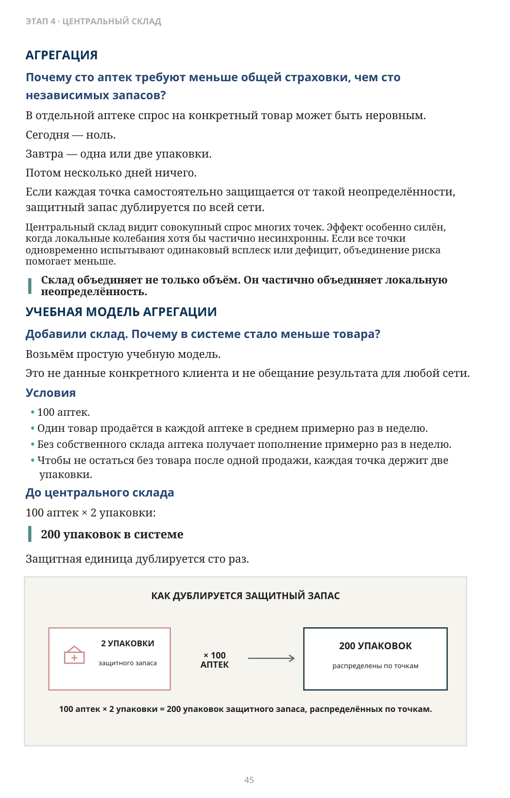
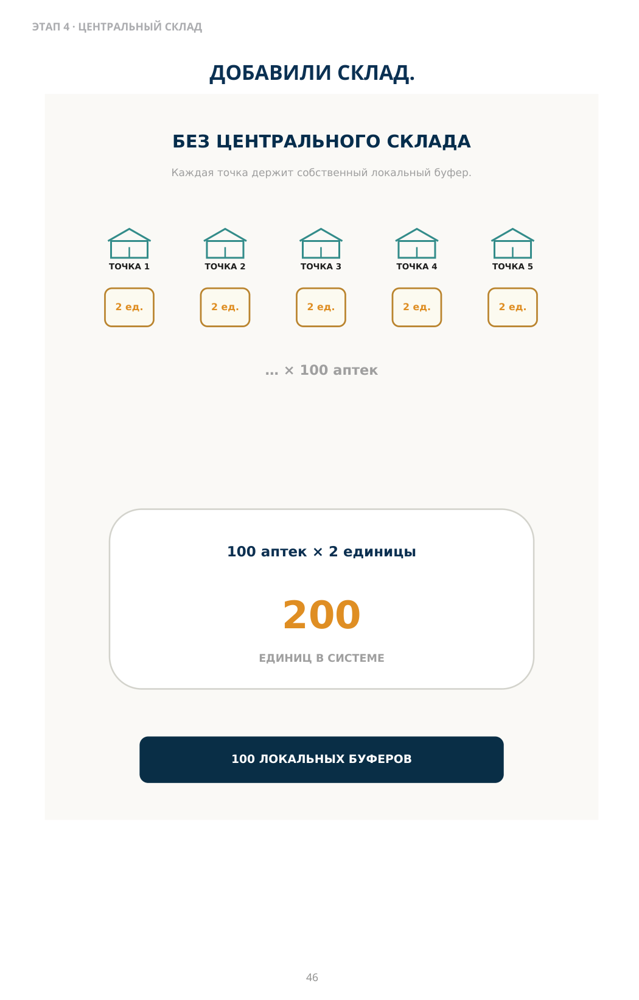
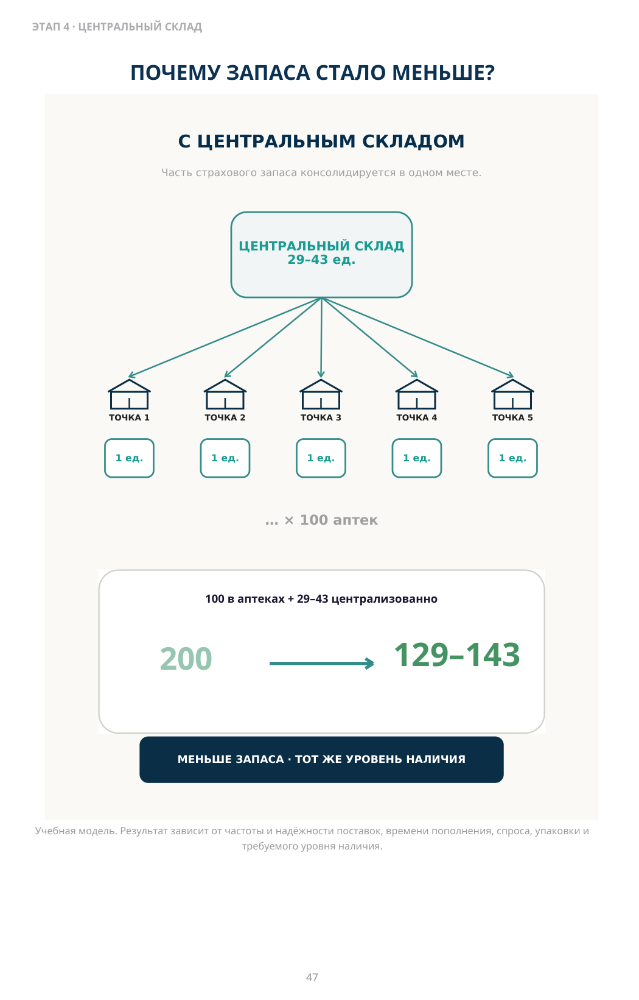
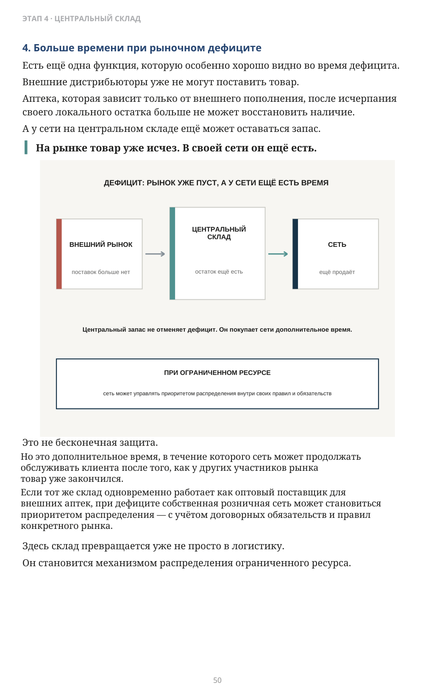
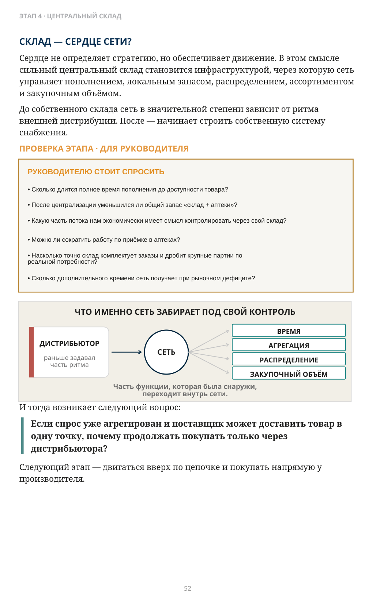

Зачем создавать ещё одно место хранения, если мы хотим уменьшить запас?
ЧАСТЬ II · ЭТАП 4
Время пополнения, агрегация и централизованное снабжение
Собственный склад на первый взгляд выглядит как противоречие. Нужно:
- арендовать или построить помещение;
- нанять людей;
- принимать товар;
- размещать;
- собирать;
- грузить;
- развозить по аптекам.
Дистрибьютор и так может привезти товар прямо в точку. Зачем добавлять ещё одну операцию и ещё одно место, где будет лежать запас? И здесь возникает один из самых важных парадоксов аптечной логистики:
можно добавить склад — и уменьшить общий запас сети.
Ответ становится понятен, если перестать смотреть на склад как на помещение.
Склад нужен не для того, чтобы хранить больше. Он нужен, чтобы управлять временем пополнения и общим запасом системы.
Добавили склад. Почему запаса стало меньше?

Описание схемы
FIG_019: Зачем создавать ещё одно место
Слева запас распределён между множеством отдельных точек без централизации; справа часть запаса перенесена на центральный склад, который обслуживает точки. Схема ставит вопрос, может ли дополнительный уровень уменьшить общий запас сети.
Когда отсутствие склада начинает стоить дороже самого склада?
Для небольшой сети прямые поставки дистрибьюторов могут быть экономически оптимальны. Собственный склад добавляет помещение, персонал, обработку товара и транспорт. Но по мере роста увеличивается другая стоимость — стоимость децентрализованного снабжения. Она появляется, когда:
- каждая аптека держит защитный запас из-за длинного или нестабильного пополнения;
- один и тот же страховой запас дублируется в десятках точек;
- крупные партии поставщика приходится размещать в аптеках, хотя локальный спрос
существенно меньше;
- разные графики поставщиков заставляют точки защищаться дополнительным запасом;
- локальный излишек одной аптеки трудно быстро превратить в наличие другой;
- приёмка множества внешних поставок забирает значимое время аптек;
- совокупный спрос уже позволяет крупные закупки, но сеть не умеет принять и
распределить этот объём. Сравнивать нужно не стоимость склада с нулём, а стоимость склада со стоимостью всей децентрализованной системы снабжения.
По моему опыту, многие сети откладывают этот переход и долго остаются в диапазоне примерно 10–20 аптек. Это не универсальный порог: география, плотность сети, модель дистрибуции и рынок различаются.
Что на самом деле определяет необходимый запас?
Для системы периодического пополнения период защиты = интервал до следующего заказа + время
поставки до доступности товара. При непрерывном пересмотре система может реагировать сразу, поэтому отдельный интервал ожидания следующего заказа не добавляется.
Считать нужно период от момента, когда продажа создаёт необходимость восстановить запас, до момента, когда пополнение снова доступно для продажи.
Если мы считаем полный цикл пополнения до аптеки, в него входят:
- ожидание до следующего цикла заказа;
- формирование и передача заказа;
- приём заказа поставщиком или складом;
- обработка и сборка;
- отгрузка и транспортировка;
- приёмка в аптеке;
- размещение до момента доступности товара для продажи.
Чем длиннее цикл и чем сильнее он колеблется, тем больше запас требуется для защиты продаж.
Запас защищает не календарь. Он защищает время до следующего надёжного пополнения.
При стабильном спросе три упаковки в день запас на один день до следующего пополнения должен составлять минимум три упаковки; на два дня — шесть; на тридцать дней — девяносто. И это ещё без дополнительной защиты от колебаний спроса и поставок.
Чем дольше нужно ждать следующую доступную поставку, тем больше товара система вынуждена финансировать.
Продажа раз в две-три недели для аптечного ассортимента — не исключение. Для большой части позиций это нормальная частота.
По моей практической оценке, около 20% товарных позиций имеют хотя бы одну продажу в типичную неделю; около 80% продаются реже. Соотношение зависит от формата и рынка. Здесь это практический ориентир по структуре ассортимента, а не универсальная отраслевая пропорция.
Речь о доле товарных позиций — SKU, а не о доле выручки или количестве проданных упаковок.
Для простоты возьмём даже более быстрый товар из этого длинного хвоста — продажа примерно раз в неделю. Если внешняя поставка приходит раз в неделю, точка держит вторую единицу, чтобы не остаться без товара после первой продажи. Если свой склад возвращает проданную упаковку следующим утром, такая двойная локальная защита часто уже не нужна.
На одном SKU разница выглядит ничтожной. На тысячах товарных позиций и сотнях аптек она превращается в капитал.
ОПЕРАЦИОННЫЙ ЦИКЛ
Что меняется, если товар возвращается на полку следующим утром?
Один из возможных циклов:
Вечер
система получает актуальные остатки и продажи.
Ночь
рассчитывается потребность и формируется заказ.
Раннее утро
склад комплектует заказы по маршрутам.
Утро / до обеда
товар принят и снова доступен в аптеке.
Разница с внешним поставщиком иногда составляет не недели, а несколько часов или один цикл заказа.
Но именно этот цикл может определять, сколько дополнительного запаса нужно держать локально.

Точное представление формулы
ВЕЧЕР — Продажи и остатки → НОЧЬ — Расчёт потребности → РАННЕЕ УТРО — Сборка на складе → УТРО / ДО ОБЕДА — Товар снова на полке
Описание схемы
FIG_020: ОПЕРАЦИОННЫЙ ЦИКЛ
Круговой операционный цикл пополнения: вечером фиксируются продажи и остатки, ночью рассчитывается потребность, ранним утром склад собирает заказ, утром или до обеда товар возвращается на полку. Вывод: склад начинает управлять временем пополнения.
Почему сто аптек требуют меньше общей страховки, чем сто независимых запасов?
В отдельной аптеке спрос на конкретный товар может быть неровным. Сегодня — ноль. Завтра — одна или две упаковки. Потом несколько дней ничего. Если каждая точка самостоятельно защищается от такой неопределённости, защитный запас дублируется по всей сети.
Центральный склад видит совокупный спрос многих точек. Эффект особенно силён, когда локальные колебания хотя бы частично несинхронны. Если все точки одновременно испытывают одинаковый всплеск или дефицит, объединение риска помогает меньше. Склад объединяет не только объём. Он частично объединяет локальную неопределённость.
Добавили склад. Почему в системе стало меньше товара?
Возьмём простую учебную модель. Это не данные конкретного клиента и не обещание результата для любой сети.
Условия
- 100 аптек.
- Один товар продаётся в каждой аптеке в среднем примерно раз в неделю.
- Без собственного склада аптека получает пополнение примерно раз в неделю.
- Чтобы не остаться без товара после одной продажи, каждая точка держит две
упаковки.
До центрального склада
100 аптек × 2 упаковки:
200 упаковок в системе
Защитная единица дублируется сто раз.

Точное представление формулы
100 аптек × 2 упаковки = 200 упаковок защитного запаса, распределённых по точкам.
Описание схемы
FIG_021: Как дублируется защитный запас в 100 аптеках
Защитный запас дублируется в точках: 100 аптек × 2 упаковки дают 200 упаковок защитного запаса, распределённых по сети.
ДОБАВИЛИ СКЛАД.
БЕЗ ЦЕНТРАЛЬНОГО СКЛАДА
Каждая точка держит собственный локальный буфер.
ТОЧКА 1 — 2 ед.; ТОЧКА 2 — 2 ед.; ТОЧКА 3 — 2 ед.; ТОЧКА 4 — 2 ед.; ТОЧКА 5 — 2 ед.; … × 100 аптек
100 аптек × 2 единицы = 200
200 ЕДИНИЦ В СИСТЕМЕ
100 ЛОКАЛЬНЫХ БУФЕРОВ

Описание схемы
FIG_022: ДОБАВИЛИ СКЛАД.
Модель без центрального склада: каждая из 100 аптек держит по 2 упаковки, поэтому общий защитный запас составляет 200 упаковок.
ПОЧЕМУ ЗАПАСА СТАЛО МЕНЬШЕ?
С ЦЕНТРАЛЬНЫМ СКЛАДОМ
Часть страхового запаса консолидируется в одном месте.
ЦЕНТРАЛЬНЫЙ СКЛАД — 29–43 ед. → ТОЧКА 1 — 1 ед.; ТОЧКА 2 — 1 ед.; ТОЧКА 3 — 1 ед.; ТОЧКА 4 — 1 ед.; ТОЧКА 5 — 1 ед.; … × 100 аптек
200 → 129–143
МЕНЬШЕ ЗАПАСА · ТОТ ЖЕ УРОВЕНЬ НАЛИЧИЯ
Учебная модель. Результат зависит от частоты и надёжности поставок, времени пополнения, спроса, упаковки и требуемого уровня наличия.

Описание схемы
FIG_023: ПОЧЕМУ ЗАПАСА СТАЛО МЕНЬШЕ?
Модель с центральным складом: в точках остаётся по одной упаковке, а на складе сосредоточено около 29–43 упаковок. Общий запас снижается примерно с 200 до диапазона 129–143 упаковки.
Для этой учебной модели предположим две вещи:
- склад может пополнять аптеки ежедневно или на следующее утро;
- сам центральный склад пополняется достаточно часто и надёжно, чтобы в
примере использовать 2–3 дня агрегированного спроса. Но запоминать нужно не процент. Запоминать нужно механизм:
Одна дублирующая защитная единица в каждой аптеке заменяется гораздо меньшим общим запасом выше по цепочке.
Именно поэтому дополнительное место хранения способно уменьшить общий запас системы. Разумеется, реальные цифры зависят от:
- частоты и надёжности поставок на центральный склад;
- времени пополнения аптек;
- вариативности и корреляции спроса;
- размера упаковки;
- минимального локального запаса;
- требуемого уровня наличия.
Если центральный склад сам пополняется редко или нестабильно, ему потребуется больший запас, и эффект будет другим. Товар с продажей раз в неделю выбран здесь только для того, чтобы механизм было легко увидеть. Это даже не самый медленный товар в аптечном длинном хвосте.
В одном из проектов у сети «Годовалов» мы перестроили архитектуру снабжения: вместо независимых крупных поставок на региональные склады товар шёл на центральный склад, а оттуда — небольшими частыми партиями в регионы. По моей памяти, суммарный складской запас снизился как минимум примерно на 30%. Особенно заметно уменьшился запас на региональных складах. Параллельно:
- сократилась потребность в площади;
- стала равномернее приёмка;
- снизилась потребность в складском труде;
- системой стало проще управлять.
Это историческое наблюдение конкретного проекта, а не универсальный норматив.
Похожий эффект позже сообщил другой клиент — Farmakopeika / Medexport: после перехода к центральной архитектуре запас, по словам клиента, снизился более чем на 30%, а операционные потребности склада уменьшились. Два разных проекта не доказывают универсальный процент. Но они хорошо подтверждают сам механизм:
агрегация и более частое пополнение могут уменьшить системный запас, даже если в цепочке появляется ещё один склад.
Зачем вести через склад товар, который дистрибьютор может привезти напрямую?
Ответ не должен быть догматичным. Не любой товар на любом рынке обязан идти через собственный склад.
Какая часть потока создаёт больше общей экономической ценности, если сеть контролирует её сама?
Когда через свой склад проходит экономически оправданная часть ассортимента, сеть получает единый ритм пополнения и видит центральный запас и запас аптек как одну систему.
При внешней поставке аптека проверяет поставку внешнего поставщика. При поставке со своего склада, где надёжно работают сканирование, комплектация и контроль отгрузки, повторную проверку можно существенно сократить и перевести на контроль исключений — там, где это допускают процессы и регулирование.
Это высвобождает время провизора и в крупной точке может влиять на потребность в отдельной функции приёмки.
Хороший склад экономит не только запас. Он возвращает время провизору.
4. Больше времени при рыночном дефиците
Есть ещё одна функция, которую особенно хорошо видно во время дефицита. Внешние дистрибьюторы уже не могут поставить товар. Аптека, которая зависит только от внешнего пополнения, после исчерпания своего локального остатка больше не может восстановить наличие. А у сети на центральном складе ещё может оставаться запас.
На рынке товар уже исчез. В своей сети он ещё есть.
Это не бесконечная защита. Но это дополнительное время, в течение которого сеть может продолжать обслуживать клиента после того, как у других участников рынка товар уже закончился. Если тот же склад одновременно работает как оптовый поставщик для внешних аптек, при дефиците собственная розничная сеть может становиться приоритетом распределения — с учётом договорных обязательств и правил конкретного рынка.
Здесь склад превращается уже не просто в логистику. Он становится механизмом распределения ограниченного ресурса.

Описание схемы
FIG_024: На рынке товар уже исчез. В своей сети он ещё есть.
Поток показан как «внешний рынок → центральный склад → сеть». При дефиците центральный запас не отменяет проблему рынка, но даёт сети дополнительное время до её проявления в аптеках.
Дополнительная обработка товара стоит денег. Но сравнивать нужно не стоимость одной складской операции, а экономику всей системы: общий запас, уровень наличия, скорость пополнения, доставку, труд в аптеках, приёмку, потери из-за отсутствия товара, капитал и устойчивость при дефиците.
Иногда прямая поставка поставщика действительно лучше. Иногда смешанная модель разумна.
Главное — не минимизировать одну локальную операцию ценой всей системы.
Поставщик или производитель часто отгружает товар крупной заводской упаковкой, а отдельной аптеке нужно гораздо меньше. Центральный склад должен превратить крупную входящую партию в количества, соответствующие реальной потребности аптек.
Мы однажды увидели обратную ситуацию: склад начал отправлять товар дальше преимущественно полными заводскими коробками. На складе локально сэкономили на сборке, а по сети вырос запас и появились проблемы с денежным потоком.
Локальная экономия на складской операции может оказаться очень дорогой для капитала всей сети.
Когда поставщик вместо десятков или сотен доставок делает одну поставку на центральный склад, часть доставки до аптек сеть берёт на себя. Одновременно сотни мелких заказов превращаются в один видимый объём — и у сети появляется более сильная позиция для обсуждения объёма и коммерческих условий.
Склад концентрирует не только товар. Он концентрирует закупочную силу.
С этого момента сеть начинает забирать не только логистическую функцию дистрибьютора, но и часть его переговорной позиции.
Сердце не определяет стратегию, но обеспечивает движение. В этом смысле сильный центральный склад становится инфраструктурой, через которую сеть управляет пополнением, локальным запасом, распределением, ассортиментом и закупочным объёмом.
До собственного склада сеть в значительной степени зависит от ритма внешней дистрибуции. После — начинает строить собственную систему снабжения.
СЕТЬ
раньше задавал
часть ритма
Часть функции, которая была снаружи, переходит внутрь сети.
И тогда возникает следующий вопрос:
Если спрос уже агрегирован и поставщик может доставить товар в одну точку, почему продолжать покупать только через дистрибьютора?
Следующий этап — двигаться вверх по цепочке и покупать напрямую у производителя.

Описание схемы
FIG_025: Вопросы руководителю о сроках поставки и централизации
Инфографика «Вопросы руководителю о сроках поставки и централизации». Сопровождающий текст раздела поясняет её смысл: И тогда возникает следующий вопрос: Если спрос уже агрегирован и поставщик может доставить товар в одну точку, почему продолжать покупать только через дистрибьютора? Следующий этап — двигаться вверх по цепочке и покупать напрямую у производителя.